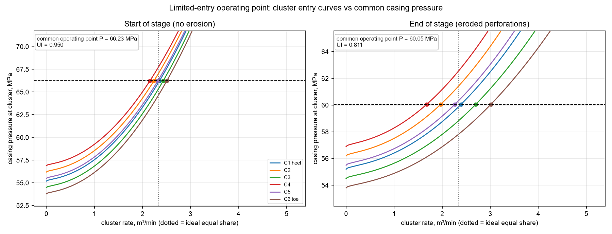
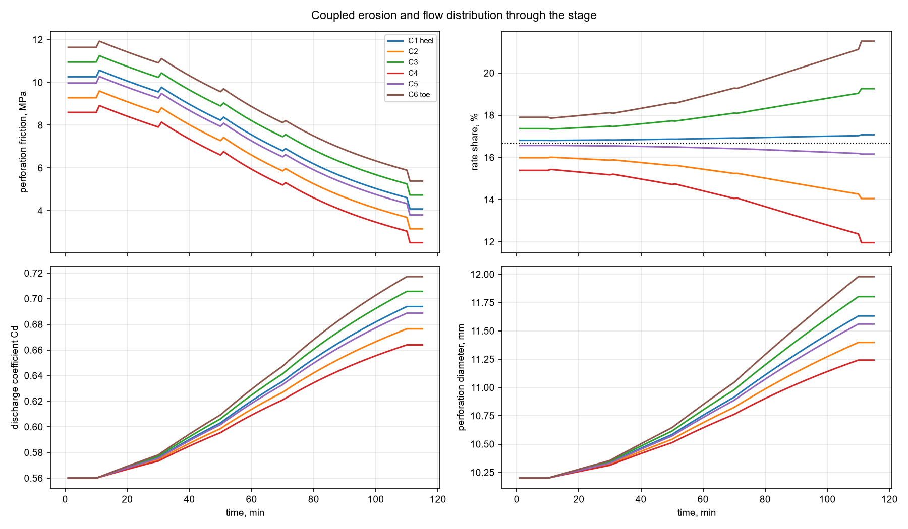
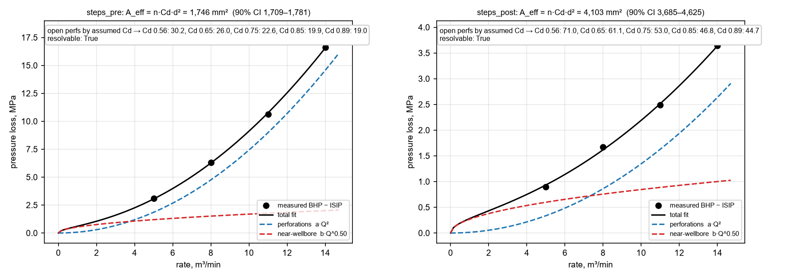
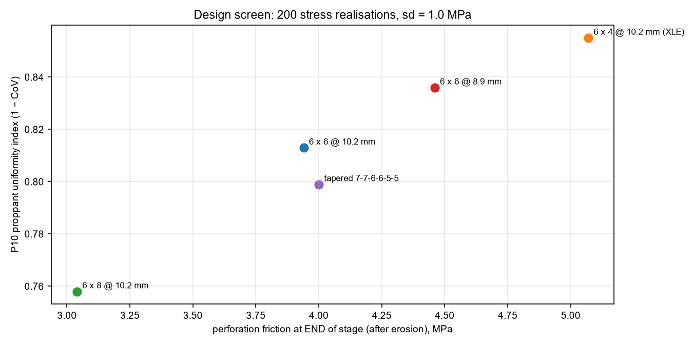
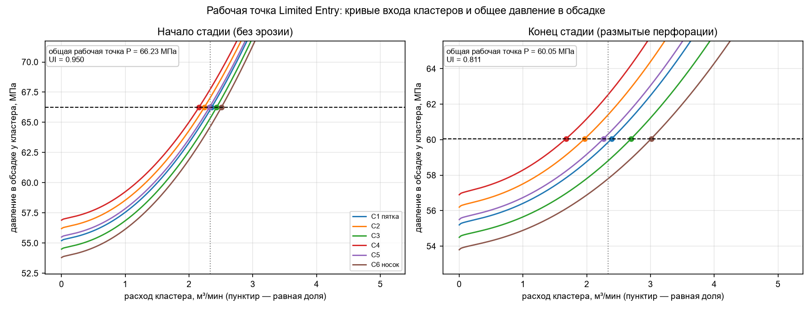
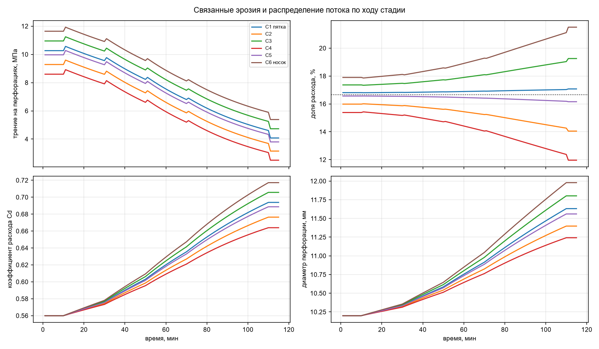
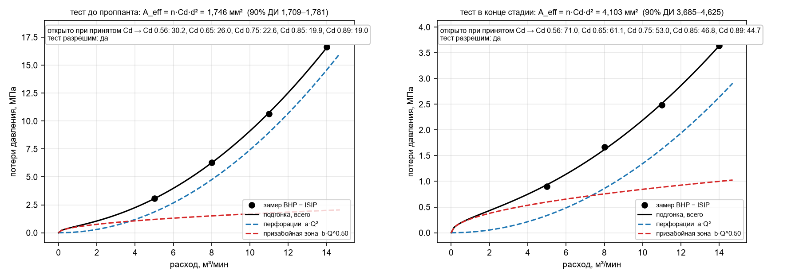
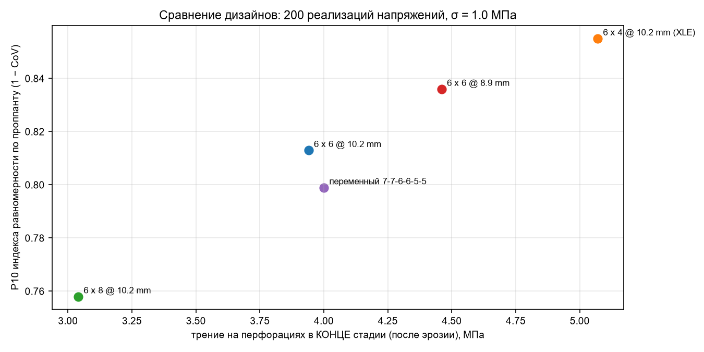

Identifiability handled explicitly. A step-down test resolves only n·Cd·d²: 30 holes at Cd 0.56 and 19.8 holes at Cd 0.85 give an identical test. The tool reports A_eff with an N(Cd) table. Calibration order: pre-proppant SDT fixes n → end-of-stage SDT measures erosion → in-stage friction trace separates Cd rounding from diameter growth.
Erosion coupled to distribution. The cluster taking more slurry erodes faster, loses friction and takes even more. Lumped models miss this runaway.
Resolvability check. Each SDT gets a "resolvable" flag and a 90% bootstrap interval — after heavy erosion the remaining friction can sink into pressure noise.
Monte Carlo design screen over cluster-stress uncertainty: start/end perf friction, % retained, P10 proppant uniformity, probability of meeting the target.
In-stage friction tracker (Python): A_eff(t) from treating pressure, projected onto a non-decreasing curve (isotonic regression), so drops flag bridging, screen-out or net-pressure build-up.
Demo results (synthetic)
0.95 → 0.81fluid uniformity, start → end of one stage, identical perforations
22.7 → 5.1 MPaXLE 6 × 4 @ 10.2 mm: keeps 22%, still the most absolute friction
30.2 vs 30open perforations recovered from synthetic SDT

Conceptual LE plot: cluster entry curves against the common casing pressure, at stage start and after erosion.

Coupled erosion and distribution: friction falls and the rate shares diverge through the stage.

Step-down fits: perforation (Q²) and near-wellbore (Q^0.5) terms; open perforations given per assumed Cd.

Design screen: end-of-stage friction vs P10 proppant uniformity over 200 stress realisations.
Data needed to calibrate a real well (3–10 stages)
Pre-proppant step-down: rate and BHP per step (or surface pressure + TVD + pipe friction) and ISIP.
End-of-stage step-down, same format.
Pump schedule: duration, rate, proppant concentration per step.
Treating pressure trace (optional — separates Cd rounding from diameter growth).
Gun entry-hole diameter, shots per cluster, cluster MD, stress per cluster or its uncertainty.
Optional: DAS, perforation imaging or erosion measurements for heel/toe bias.
Validation
Reproduces the published ResFrac example (80 bpm, 32 × 0.4 in, 10 ppg, Cd 0.85): 803 psi vs ~800 psi.
Synthetic SDT with known truth: open perforations 30.2 vs 30; tortuosity within 10%.
Erosion calibration on synthetic stages: α and β recovered within 1%.
Excel vs Python on the same inputs: operating pressure, cluster rates, SDT coefficients, erosion end state, calibrated α agree to better than 0.01%.
Sources
ResFrac, The A to Z Guide to Accelerating Continuous Improvement with ResFrac, arXiv:2205.14820.
Long, Liu, Xu et al., A Perforation-Erosion Model for Hydraulic-Fracturing Applications, SPE Prod & Oper 33(4), 2018; Long & Xu, SPE J. 2017 (SPE-185173-PA).
Construction and Application of a Quantitative Perforation Erosion Model Based on Field Experiments, Materials 2025, 18, 2507.
PEER consortium (NSI), OGJ 2022: a 17% increase in perforation diameter → over 62% loss of limited-entry pressure.
Калькулятор Limited Entry — Plug & Perf
Трение на перфорациях · эрозия во времени · калибровка по SRT/SDT · распределение потока по кластерам (концептуальный LE-график). Единицы СИ. Excel + Python.
Все цифры на странице — из синтетического демо-кейса, чтобы показать порядок работы. Замените их данными реальной скважины.
Учтена проблема идентифицируемости. Ступенчатый тест даёт только произведение n·Cd·d²: 30 отверстий при Cd 0.56 и 19.8 отверстия при Cd 0.85 дают одинаковый тест. Поэтому инструмент выдаёт A_eff и таблицу N(Cd). Порядок калибровки: тест до проппанта фиксирует n → тест в конце стадии измеряет эрозию → кривая трения внутри стадии отделяет скругление кромки от роста диаметра.
Эрозия связана с распределением. Кластер, который берёт больше смеси, размывается быстрее, теряет трение и забирает ещё больше. Модели с «одной средней перфорацией» этот разгон не видят.
Проверка разрешимости. Для каждого SDT — флаг «разрешим/нет» и 90% бутстрэп-интервал: после сильного размыва остаточное трение может утонуть в шуме давления.
Монте-Карло по дизайнам с неопределённостью напряжений по кластерам: трение в начале и конце стадии, % сохранённого трения, P10 равномерности по проппанту, вероятность достичь цели.
Трекер трения внутри стадии (Python): A_eff(t) по давлению закачки, приведённый к неубывающей кривой (изотоническая регрессия). Провалы сигнала указывают на бридж, скрин-аут или рост net pressure, а не на перфорации.
Результаты демо (синтетика)
0.95 → 0.81равномерность по жидкости, начало → конец одной стадии, перфорации одинаковые
10.1 → 3.9 МПатрение на перфорациях, 6 × 6 отверстий по 10.2 мм
22.7 → 5.1 МПаXLE 6 × 4 по 10.2 мм: сохраняет 22%, но в абсолюте трения всё равно больше всех
30.2 при 30открытых перфораций восстановлено по синтетическому SDT

Концептуальный LE-график: кривые входа кластеров против общего давления в обсадке, в начале стадии и после эрозии.

Связанные эрозия и распределение: трение падает, доли расхода по кластерам расходятся за стадию.

Подгонка SDT: перфорации (Q²) и призабойная зона (Q^0.5); число открытых перфораций — для каждого принятого Cd.

Сравнение дизайнов: трение в конце стадии против P10 равномерности по проппанту, 200 реализаций напряжений.
Какие данные нужны для калибровки реальной скважины (3–10 стадий)
Ступенчатый тест до проппанта: расход и забойное давление на каждой ступени (или устьевое + TVD + трение в трубах) и ISIP.
Ступенчатый тест в конце стадии, в том же формате.
График закачки: длительность, расход, концентрация проппанта по шагам.
Кривая давления закачки (опционально — именно она разделяет скругление кромки и рост диаметра).
Диаметр входного отверстия перфоратора, число отверстий на кластер, MD кластеров, напряжения по кластерам или их неопределённость.
Опционально: DAS, видео перфораций или замеры эрозии — для калибровки смещения к пятке/носку.
Проверка
Повторяет опубликованный пример ResFrac (80 bpm, 32 × 0.4", 10 ppg, Cd 0.85): 803 psi против ~800 psi.
Синтетический SDT с известным ответом: открытых перфораций 30.2 при истине 30; тортуозность в пределах 10%.
Калибровка эрозии на синтетических стадиях: α и β восстановлены с точностью до 1%.
Excel и Python на одних данных: рабочее давление, расходы по кластерам, коэффициенты SDT, состояние после эрозии и откалиброванный α совпадают лучше чем на 0.01%.
Источники
ResFrac, The A to Z Guide to Accelerating Continuous Improvement with ResFrac, arXiv:2205.14820.
Long, Liu, Xu et al., A Perforation-Erosion Model for Hydraulic-Fracturing Applications, SPE Prod & Oper 33(4), 2018; Long & Xu, SPE J. 2017 (SPE-185173-PA).
Construction and Application of a Quantitative Perforation Erosion Model Based on Field Experiments, Materials 2025, 18, 2507.
Crump & Conway (SPE 15474): Cd 0.56 → 0.89 по аппроксимации Romero (2000), цит. по Processes 2022, 10, 1058.
Mondal et al., Advancements in Step Down Tests…, SPE-204147-MS, 2021.
Merry & Dalamarinis, оценка перфораций по трубным волнам, SPE-201686-MS, 2020.
Консорциум PEER (NSI), OGJ 2022: рост диаметра перфорации на 17% → потеря более 62% LE-давления.